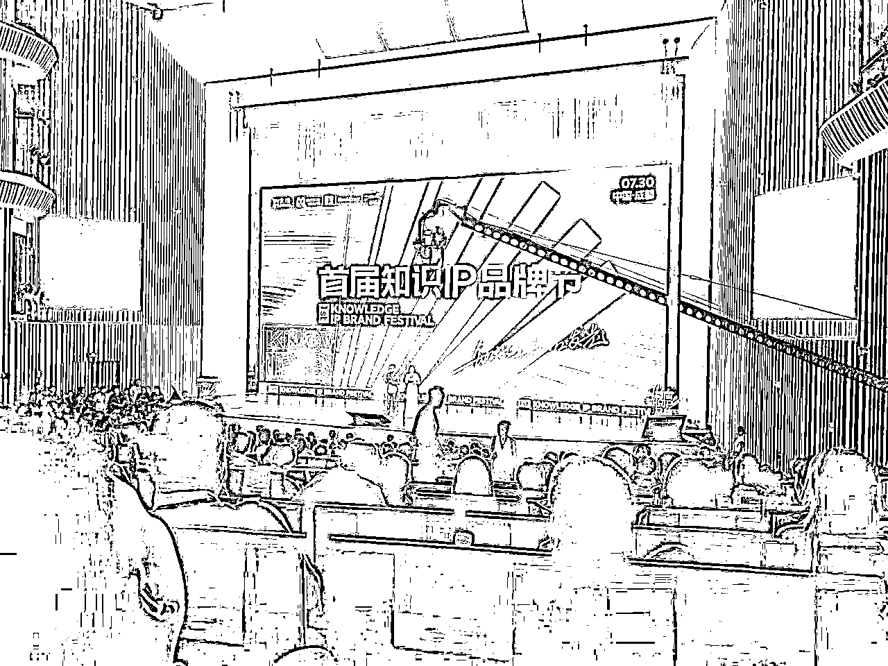
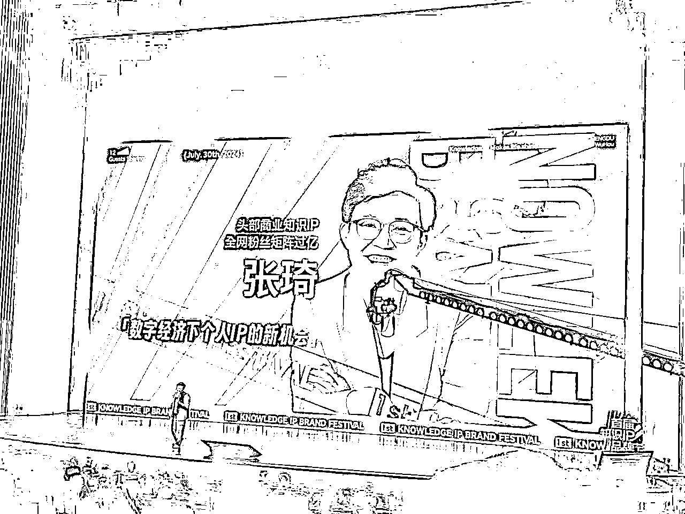
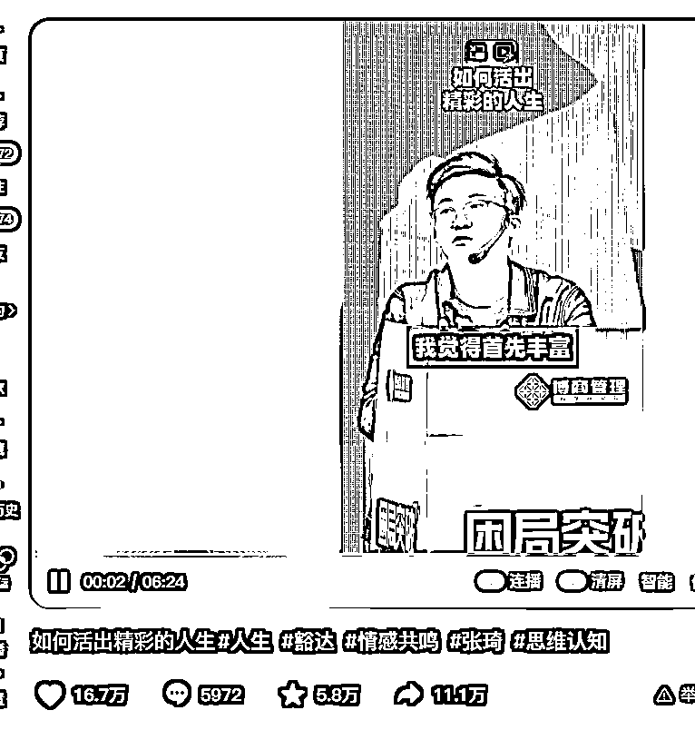
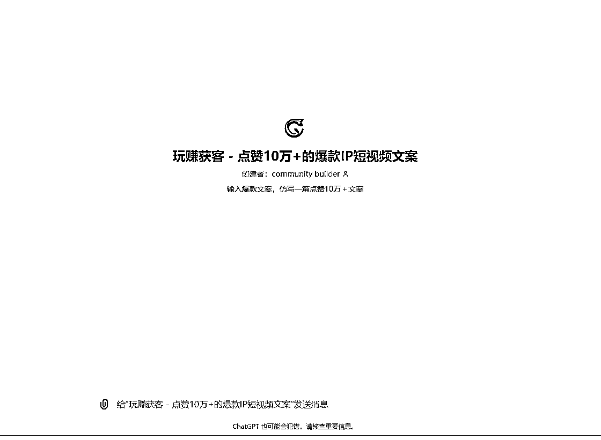

来源：https://xjfih5idi1.feishu.cn/docx/MpZzdTTFFoyy2UxGYM7ckEjMnfd


今天是成都首届知识IP品牌节，开场张琦老师分享了自己的IP打造方法论
这个方法论 老师在 博商内部都没有分享过
感觉对自己的启发非常大，然后结合老师的IP打造方法论
所以打造了一套适合 拆解 IP型短视频文案的 AI智能体
只需要输入对应的爆款短视频文案（抖音视频链接），
30秒就可以拆解1条点赞10万+的爆款短视频文案

ps，利用我们自研的 AI文案提取工具，进行提取。
觉得什么样的人生是精彩的？我觉得首先丰富去体验，对吧？该谈恋爱去谈，该结婚去结，过不下去就离，离了想了又富，有什么关系吗？不就是体验吗？你想那么多对不对？想追的人就去追，想做的事就去做。人到老了，快走的那天，你不会后悔你做了什么，你通通后悔你没有做什么，对不对？所以老是想，哎呀，他会不会是个渣男，但是又忘不了他，你那么爱他，就试着跟他谈一下，要不要走入婚姻的堡垒，婚姻会不会是爱情的坟墓？可是没有婚姻的爱情可能让你死无葬身之地，对不对？该接就去接呗，好好的过呗，实在过不下去，合同一解约，你再各自安好，一别两宽嘛，如果你俩又重新找到了感觉，再在一起，无非而已。想那么多干嘛呢？对不对，诶，不要内耗，拒绝内耗，OK,做一个丰富的人，第二件事情叫真实，我们要做个真实，不要自己把自己给骗了，不专不专啊，有点2，是不是完全的接纳自己。一个容易暴怒的人，一个看别人不顺眼的人，一个容易跟世界产生攻击的人，是完全自我没有和解的，就是你对世界的攻击，实际上是你对自己的不满。一个真实的人是完全接纳自己，和自己的经历，和自己的人生，和自己的原生家庭，真正完成了和解，你不再拧巴了，不拧巴就不再内耗了。最后呢，作为一个自由的人，我们人到底有没有自由意志啊，可能真的是没有自由意识的，我们会被时代局限，我们会被行业局限，我们会被周遭的所有的输入的东西所局限，我们会被算法所局限。所以人很多时候是没有自由移制，我们很容易随波逐流，我们很容易被时代，被流量，被周遭，被社会的评价，被世俗的评价，被原生家庭所定义，甚至被他们裹挟各位，所以我到格力去，我和董姐交流，董姐跟我讲了几句话，她说一个人要成功，特别是一个女孩子要成功，一定要打破世俗对你的定义，这句话很有力量。各位，所以现在很多女孩子去参加各种各样的课是吧，你要会识别那个课到底是让你变得更有力量，还是让你变得更没力量，我觉得现在社会在不断的发展，对女性越来越友好了，但是还是有些人讲的很多东西啊，他不是代表先进文化是吧？就是今天我们对待女性成功的时候，我们既然说一个女人再成功，再有事业，再伟大，要是你没有老公，你要是没嫁掉，你一定晚上空虚寂寞冷，你的快乐肯定是假的。所以你看宗老爷子离开了我们，宗庆后离开了我们，大家就在操心宗富丽的婚事啊，所以你看宗富丽，全中国老百姓都爱你啊，爸爸那么优秀，给你留了那么多的钱，但是遗憾啊，你应该找个男人嫁了哇，你清朝穿越回来的呀，这宗富丽的婚事轮得到你操心吗？一个女人的成功难道只能用婚姻定义吗？你在婚姻当中找到成功当然是成功，但是有没有一种人，他是可以在事业当中找到幸福和圆满的？成年人最大的自律就是不要去纠。调整别人的生活，不要用你的认知去定义别人的生活丰富丽，需要爱情，但是未必需要婚姻，对吧？你还需要操心他的婚姻。甚至网上有些人更搞笑啊，拿这个牌子说嫁给我吧啊，但是那样的评论居然评论区真的有好多，有一条高赞评论就是这样子，说宗庆后一生的遗憾就是没有看到自己的女儿出嫁，居然那一条是高赞评论，你错了，宗老爷子看到他的女儿那么优秀，能够把这个事业继承下来，能够让这个财富传承下去，能够把他的价值观传承下去，能够看到娃哈能够为今天那么多的人民群众服务，我觉得他一定是幸福的，她一定为她的女儿感到骄傲，她的女儿嫁不嫁人，她都为她感到骄傲，对吗？而且更多的是女孩子也会这么认为，所以好多富婆被杀猪盘杀掉，就是这个原因，你都如此的成功了，你还在情爱当中出不来，你知道吧，为了爱是要死要活。爱情很美好，但是爱。情只是生命中的一个环节，对吧？我们可不可以有大爱呀？爱这个世界，爱你的理想，爱你的梦想，爱你的事业，爱你身边周遭的一切美好，是不是比在爱情当中你找到了更多更值得你爱的地方？所以你的人生其实不是悲观，也不是乐观，而是真正的达观了。当世界大了，你的问题就小了，当舞台大了，你很多东西就不纠结了。各位，所以回到什么，回到自身，我原来看的一本书叫明朝那些事儿，这本书很有意思，拆解的挺好，这本书的作者叫当年明月，他拆解这本书他拿了上千万的版税，他早就已经财富自由了，所以这本书是一本神书啊，到现在卖的都非常好，YYDS,所以他火了之后呢，央视就采访他说当年明月先生你拆解了一本神书，那么多人看这本书，历史书，他拆解的不是野史，是正史，你拆解完一本历史书，你能不能讲一下你的感悟，他的感悟是什么？你看明朝那些事，拆解了开国皇帝朱元璋，拆解了永乐大帝朱棣拆解了明朝那些。是里边的第一男主角，王阳明心学的开创者，影响了一代一代中国人，哇，这些都是英雄人物，他说这些英雄人物洋洋洒洒，他们的生命，他们的人生，在我的笔下无非三页纸，哇，这句话打到了我的内心，更何况我们这些普通人呢？这世界上99.9%的人，我们来了跟没来一样，50年之后，你孙子记得住你，100年呢，你从孙还记得住你吗？你的生命来到这个地球，来了跟没来一样。各位听上去有点悲哀，但这句话不是悲观，而是真正的达观。各位，人生就是短短几十年，幸运点100年我们不会被记住，我们应该怎么过好这一生呢？所以各位，我们应该在无意义的生命当中，尽量的让自己过得快乐一点，幸福一点，圆满一点。所以我们才会想到在华人界最有影响力的金庸先生说的那句话。人生无非是大。一场悄然离去，你来了，你就大闹一场吧，对吧？什么意思？我的意思是你就不要那么拘泥了啊，所以你来到这个世界上，你不是为了传承记忆，你们家也没有王位去继承，对吧？你来到这个世界上就是看山看水看世界，去丰富自己的体验，见天见地见众生，反而来关自己对不对，你的成长更重要。
一条长达6分钟的视频，点赞量16.7万，评论5972条，最重要的是转发量，有11.1万赞
他是将商业的？为什么要讲怎么样活出精彩人生呢？
因为很简单，只有有传播属性，才可以形成势能差。如果只讲垂直商业，那么看的人会非常少，没有办法形成破圈传播，获取到新增流量。
一条 10万＋转发 == 上千万人看到 == 无形中节约天价的广告费
要把广泛话题 和 垂直话题结合起来
广泛的话题来打开播放量，垂直的话题来植入软广

你觉得什么样的人生才叫精彩？我觉得关键在于丰富的体验。想谈恋爱就去谈，想结婚就去结，过不下去了就离婚，离婚后想复合就复合。人生不就是体验吗？不要想太多。想追的人就去追，想做的事就去做。等你老了，临终时不会后悔你做了什么，而是会后悔你没做什么。所以，不要纠结太多，勇敢去尝试吧。
你是否经常因为担心某些结果而放弃尝试？比如怕对方是渣男，却又忘不了他。你很爱他，那为什么不试着和他谈恋爱，甚至走进婚姻的殿堂？婚姻可能是爱情的坟墓，但没有婚姻的爱情或许会让你无所依靠。
就像我和董明珠交流时，她说“一个人要成功，特别是女性，要打破世俗的定义。”这句话很有力量。很多女性通过各种课程提升自己，但要认清哪些课程能让你变得更有力量，而不是让你更没力量。就像宗庆后的女儿宗馥莉，她在事业上非常成功，但很多人却只关心她是否结婚。难道女性的成功只能用婚姻来定义吗？
在今天这个社会，对女性的态度有所改进，但仍有很多陈旧观念在影响我们。比如，宗馥莉虽然在事业上取得了巨大成就，但很多人还是在关注她的婚姻问题，认为她应该结婚才能算成功。这种观念不仅不公平，也限制了女性的发展。
所以，我们要学会辨别哪些声音是真正有益的，哪些是无意义的噪音。就像《明朝那些事儿》的作者当年明月，他通过拆解作实现了财务自由。他的书带给人们很多启发和力量，这才是真正值得追求的目标。
人生短短几十年，我们应该追求丰富和真实，不要被世俗的眼光束缚。接受自己，和自己和解，才能活得更自在，更幸福。不要用自己的认知去定义别人的生活，每个人都有权选择自己的路。
人生无非是一场悄然离去，既然来了，就闹一场大的吧。看山看水看世界，见天见地见众生。人生短暂，何不活得丰富多彩，快乐无悔？